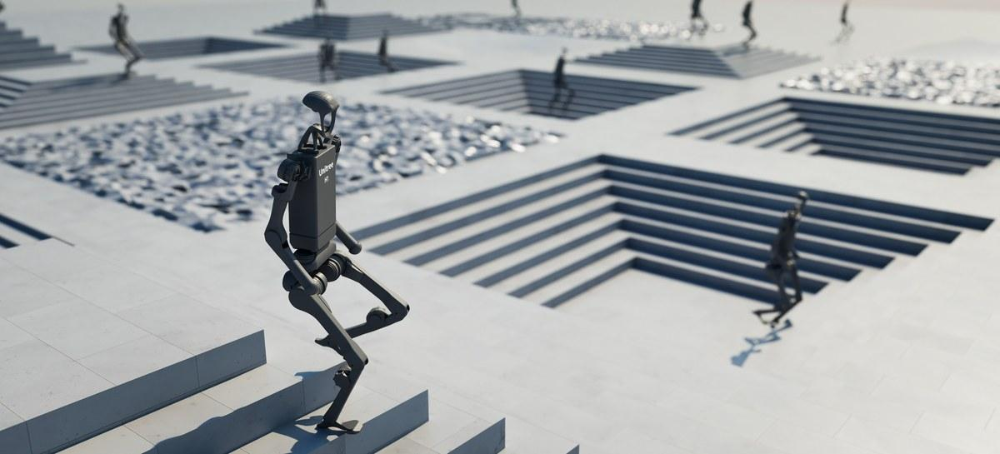
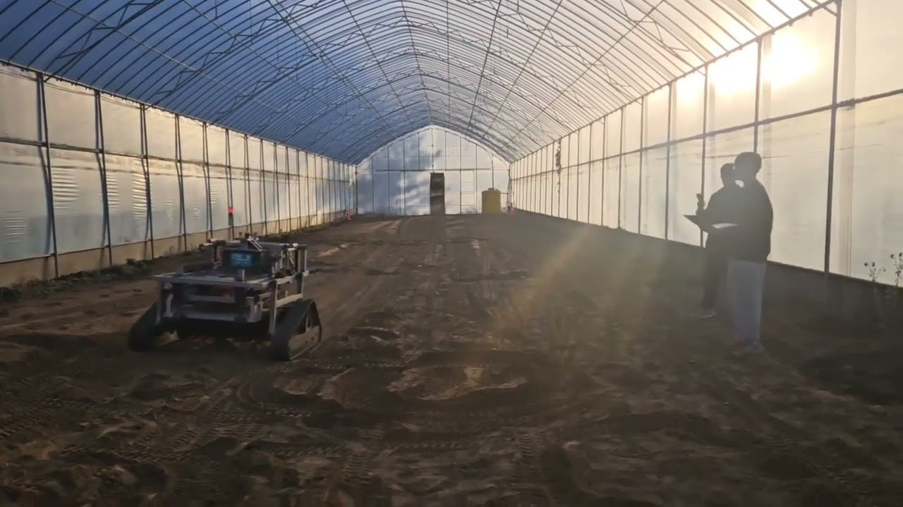
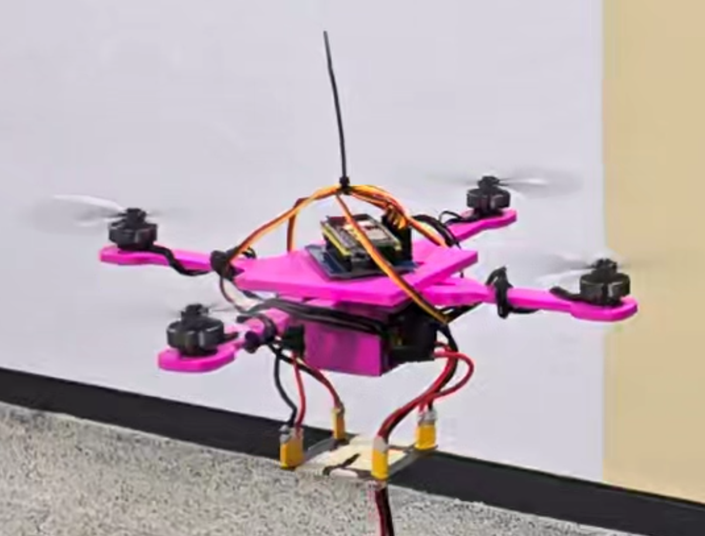

01 / THE BEGINNING
 ZETIN PROJECT ARCHIVE / 01
ZETIN PROJECT ARCHIVE / 01Line Tracer Line-following robot
↗The line-following project that started ZETIN’s robotics journey
FROM THE FIRST LINE
ZEro To INfinite grew out of ZETIN, the robotics club at the University of Seoul. Starting with line tracers, we have expanded our hands-on expertise in robot design and control.
We bring experience with humanoids, delivery robots, quadrupeds, drones and disaster-response platforms to R&D projects for companies and institutions.
TECHNOLOGY IN MOTION
Explore the design, control and autonomy behind our platforms.
ZETIN PROJECT ARCHIVE / 01The line-following project that started ZETIN’s robotics journey

ZETIN PROJECT ARCHIVE / 02An AI-powered humanoid for campus guidance and autonomous walking

ZETIN PROJECT ARCHIVE / 03An autonomous robot for campus deliveries, advertising and information services
 ZETIN PROJECT ARCHIVE / 04
ZETIN PROJECT ARCHIVE / 04A quadruped robotics platform

ZETIN PROJECT ARCHIVE / 05A multipurpose quadcopter platform
 ZETIN PROJECT ARCHIVE / 06
ZETIN PROJECT ARCHIVE / 06A 6WD, 4WS disaster-response robot built for rough terrain
* Temporary images show related work from the ZETIN project archive ↗. They will be replaced with photos of each platform.
DESIGN · CONTROL · INTELLIGENCE
From mechanical design and embedded control to perception and autonomy, we combine the technologies your project and operating environment need.
Mechanisms and platforms designed around your goals and operating environment.
Sensors and actuators integrated for reliable control.
Perception, navigation and learning-based control tailored to your task.
LET’S BUILD WHAT’S NEXT.
Have a robotics challenge in mind?
From the first idea to implementation,
let’s find the right technology together.
THE BEGINNING IS NEVER THE LIMIT.
From zero to infinity.
Creating something from nothing.